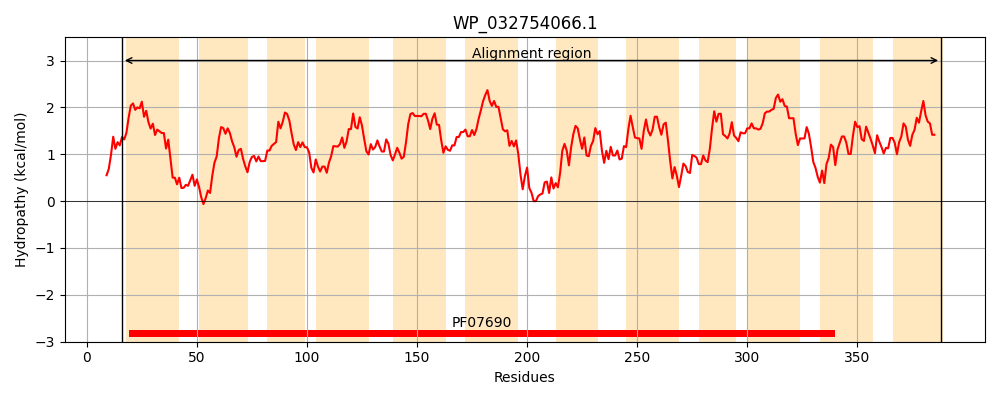
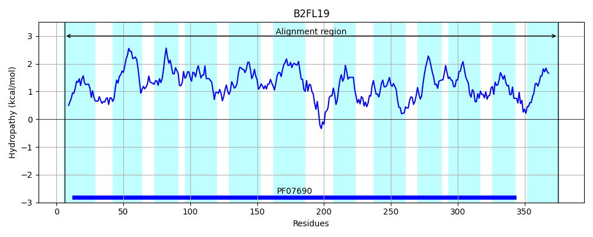
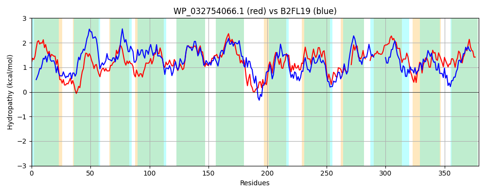

Hit Accession: B2FL19
Hit TCID: 2.A.1.2.122
Hit Description: gnl|BL_ORD_ID|1695 gnl|TC-DB|B2FL19|2.A.1.2.122 Putative transmembrane MFS family transporter OS=Stenotrophomonas maltophilia (strain K279a) OX=522373 GN=Smlt0549 PE=4 SV=1
Mach Len: 379
e:0.000000
Query TMS Count : 12
Hit TMS Count: 12
TMS-Overlap Score: 12.500000
Predicted Substrates:CHEBI:48958;1,1'-azobis(N,N-dimethylformamide)
BLAST Alignment:
Score: 591 , Bit scores: 232 bits, E-value: 6.0e-73, Alignment length: 379, Percentage identity: 37
Query: 16 WIAVIALGICAFSIVTSELAPVGMLSALAADFHQTESGMGLAVTAYGWVGALAALLSGAMPARISRKALLVGLMLTLALSCLAATRSYSMFALMSARMIGALAHGAFWALIGIVAAQLVPPHRLGLATAIIFGGVSAASVVGVPLASFIATLAGWRHAFLAVALLSLAAAAVLCSTLPALAASTPVRLGVYRDIFRNPLLCGLYGATACIITAHFAAFTYVEPLLITLQGVPATALSGLLLLSGVSGLVGNVIAGKLIDRHLKGLIFA---SLLLSGGALALLG---TGRLALLPFCFSGLLLALWGAGIAIVFVGLQTWLLRSAGAVAQPASAIYVAIFNAAIGTGALVGGQLIATAGLSGMMWLAAGIMACSTLLIA 388
W AV A+G+ FS+VT+E+ PVG+L+ +A D + GL ++ + A+ A L I R+ +L L+ L ++ +A+ + + L++AR++ G WA+ G +AA+LVP HR+GLAT+IIFGGV+AASV+GVPL + I GWR AF A+AL S A + +PAL VR + + + L T ++ HF AFTYV PLL GV A + LL G +G+ GN IAG L RH +G++ A LLL+ LG TG + ++L LWG V VGL +W++++ + A+A+YV +FN I GA GG+L+ GL +W+AAG+ +TL+IA
Sbjct: 6 WWAVSAVGLATFSVVTTEMLPVGLLTPVAEDLGASTGTAGLMISLPALLAAVFAPLVVIAAGGIDRRRILCVLLGLLLVANVASALAPGIGWLLAARVLVGFCMGGIWAIAGGLAARLVPAHRIGLATSIIFGGVAAASVLGVPLGALIGDALGWRFAFAAMALFSAAVMLLHLWVVPALPVVASVRPAQFVQLLGHRGLQRGLCLTLLLVAGHFIAFTYVRPLLTLRSGVDAAWIGALLFAYGTAGIAGNFIAGPLAARHPRGMLLAISCGLLLTPLLFLWLGGTPTGGI---------VVLLLWGLAYGGVSVGLMSWMMKAVPHAVEIATALYVGVFNIGIAMGAWGGGRLLDGVGLHANLWVAAGLAMVATLVIA 375 | Protein Hydropathy Plots: |
|---|
|  |  |
Pairwise Alignment-Hydropathy Plot:
|
|---|
|  |